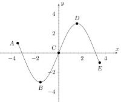

Which of the points above is/are a local maximum?
Remember that any point that is the largest value in some small segment of the
graph nearby is considered a local maximum. In particular you can have more than
one local maximum in a graph!
1.1 : Which of the points is/are a local minimum?
Remember that any point that is the lowest value in some small segment of the
graph nearby is considered a local minimum. In particular you can have more than
one local minimum in a graph!
1.1.1 : Which of the points is/are an absolute maximum?
Although more than one point can be an absolute maximum, there can be only one
absolute maximum value. In other words, the same -value can be attained on
multiple -values, but the absolute maximum is really asking about the highest -value
attained. So you should ask yourself; which point has the highest -value?
1.1.1.1 : Which of the points is/are an absolute minimum?
Although more than one point can be an absolute minimum, there can be only one
absolute minimum value. In other words, the same -value can be attained on multiple
-values, but the absolute minimum is really asking about the lowest -value
attained. So you should ask yourself; which point has the lowest -value?